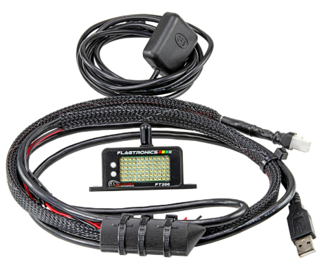

Kit Contents

FT200 wireless in-car display
FT200 power wiring & battery harness
FT200 GPS wiring harness
FT200 Manual
Mounting Velcro
Installation:
The FT200 has a variety of mounting options. Velcro or double sided tape will work in many installations. The FT200 has 4 holes on the mounting tabs to allow the use of screws, bolts, or zip ties. We also offer a several mounting kits:
FT-03646 (1/4-20) |
FT-03648 Cage |
FT-03647 (GoPro) |
FT-03650 Suction Cup |
Wiring:
Connect the flying lead Orange & Black wires (12V Power and Ground) to a switched & fused vehicle power connection. Battery, if equipped, should be connected with the included small black 2 Way connector. USB (5V USB) may be connected as an alternative to 12V. USB is needed for firmware updates and programming. The CAN Bus equipped wiring harnesses have a yellow wire for CAN Low and blue wire for CAN High. The FT200 has a CAN termination resistor built into the unit and will not require one externally.
Antenna:
An antenna is on top of the FT200. This antenna should stay vertical and have a clear line of sight through window openings in the vehicle. Enclosing the FT200 by blocking the antenna with an in-dash or in center console installation may greatly reduce performance.
Light Sensor:
A light sensor at the rear of the unit adjusts brightness to ensure the display is dim at night and bright during the day. Please keep this light sensor, shown in the image to the right, unobstructed for best performance. The FT200 has 3 or more programmable light curves available for those who wish to tune this to their needs